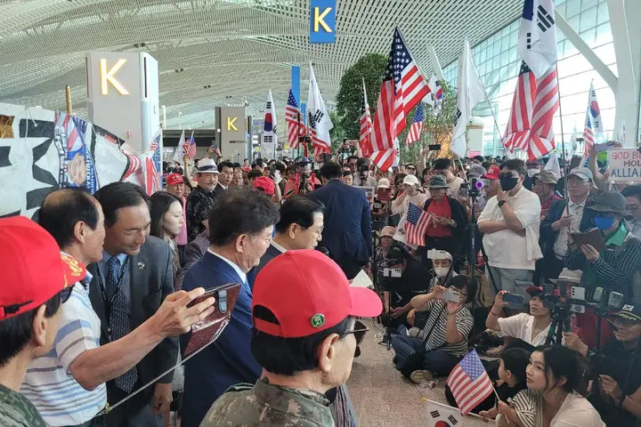
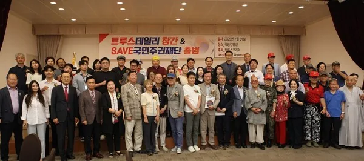

서명운동
민주당 해산을 위한 서명에 동의합니다!
서명 접수를 준비하고 있습니다. 준비가 끝나면 이 홈페이지에서 바로 서명하실 수 있습니다.
이름과 휴대폰 번호를 적고 동의하시면 서명이 접수됩니다.
서명하신 내용은 관리자만 볼 수 있습니다.
지금까지 명이 서명하셨습니다



문화전쟁 · 소액주주운동
후원하기
3.5% 175만 명의 기적, 당신의 손으로!
소액주주운동으로 언론과 문화를 되찾아 자유를 수호합시다!
은행: 하나은행
계좌번호: 212-910016-02504
예금주 트루스코리아